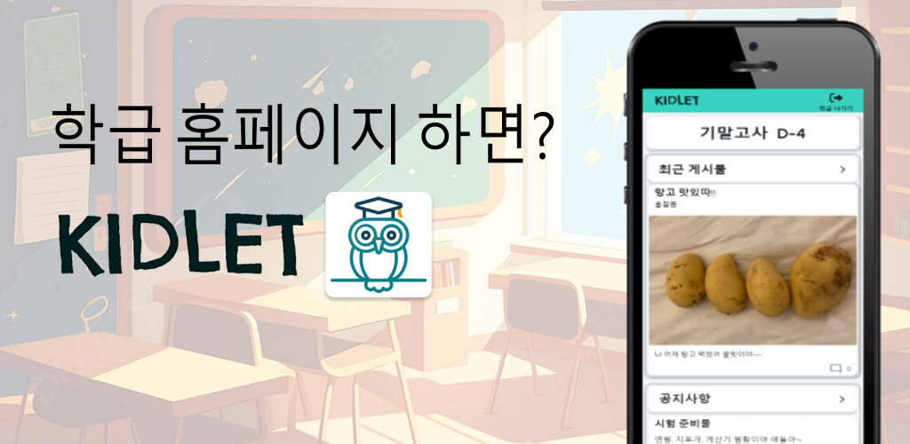

Kidlet
가정통신문의 분실 위험성과 종이 자원을 줄이고,
익명으로 자유로운 대화와 정보를 주고 받으며 사진과 같은 추억들은 함께 공유 및 저장할 수 있는
기능을 가진 모바일 커뮤니티 시스템을 계획하고 제작하였습니다
담당 업무
- 팀장으로 팀원 역할 분배 및 일정관리
- 미팅 계획 및 미팅 주도, 회의 주도
- 전체적인 UI틀과 로고 및 디자인
- 각 단계별 문서 관리
- DB 설계 및 관리
- front-end 디자인 및 기능 생성
- firebase DB 관리 및 인증 api 연결
구체적인 구현 기능
- 팀장으로 팀원 역할 분배 및 일정관리
- 개발 모델을 진화적 모델을 채택하여
폭포수모델처럼 단계별 문서를 작성하며
개발 배포를 반복해 빠른 피드백 및 수정을 통해 완료하였다.
사용 기술
- 개발 언어 : Dart
- 사용 프레임워크 : Flutter, Flutterflow
- DBMS : Firebase
산출물
- 주제 제안서
- 요구명세서
- 설계명세서
- 중간보고서
- 최종보고서
- 회의록
apk 다운로드 주소
플레이스토어 다운로드 링크
- https://play.google.com/store/apps/details?id=com.kumoh.kidlet
apk 다운로드 주소
- https://drive.google.com/file/d/1uoXY0B30-0WAn-YkZKFdpPemkMLBiLYV/view
- 팀장으로 팀원 역할 분배 및 일정관리
- 개발 모델을 진화적 모델을 채택하여
폭포수모델처럼 단계별 문서를 작성하며
개발 배포를 반복해 빠른 피드백 및 수정을 통해 완료하였다.
사용 기술
- 개발 언어 : Dart
- 사용 프레임워크 : Flutter, Flutterflow
- DBMS : Firebase
산출물
- 주제 제안서
- 요구명세서
- 설계명세서
- 중간보고서
- 최종보고서
- 회의록
apk 다운로드 주소
- 플레이스토어 다운로드 링크
- https://play.google.com/store/apps/details?id=com.kumoh.kidlet
- apk 다운로드 주소
- https://drive.google.com/file/d/1uoXY0B30-0WAn-YkZKFdpPemkMLBiLYV/view